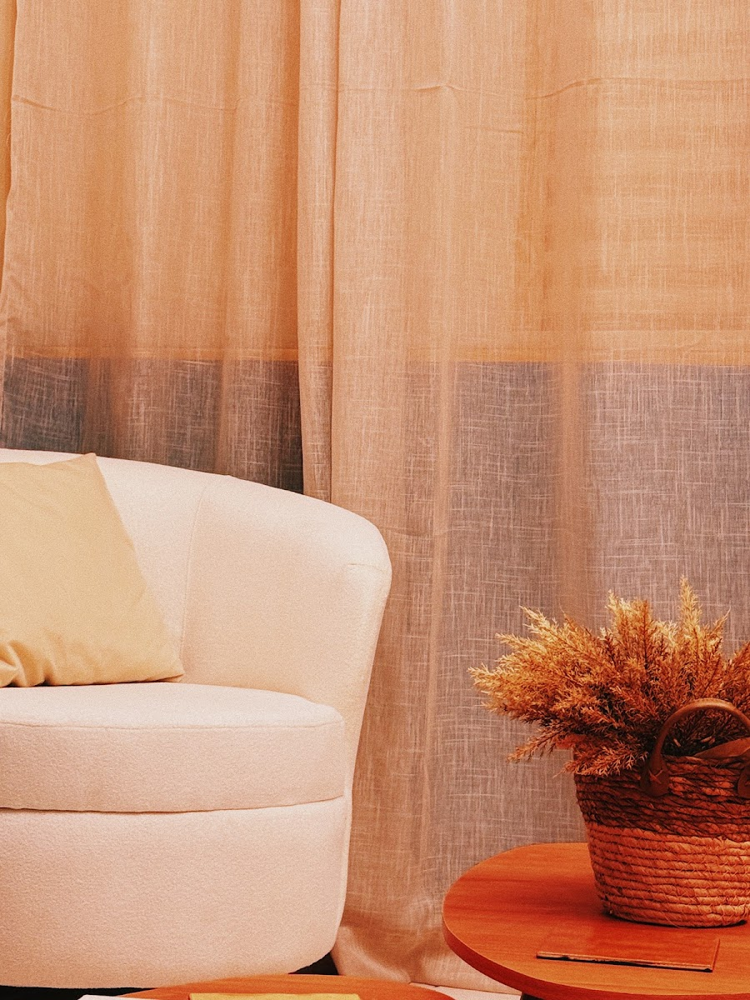

ATIPICAMENTE PSI
CALDAS NOVAS • ON
Núcleo clínico multidisciplinar integrado com Psicologia Clínica, Avaliação Neuropsicológica, Terapia ABA, TDAH e Autismo (TEA). Intervenções baseadas em evidências científicas com afeto e estrutura de ponta.



Protocolos individualizados conduzidos por especialistas com registro no CRP 09 e constante atualização científica.

Intervenção intensiva baseada na Análise do Comportamento Aplicada, focada em expandir repertório verbal, comunicação funcional, autonomia nas atividades diárias e regulação comportamental infantil.

Mapeamento cognitivo das funções executivas, atenção, memória e perfil de aprendizagem para investigação de TDAH, Dislexia e altas habilidades.

Superação de bloqueios escolares e suporte contínuo para pais e escolas, alinhando plano de desenvolvimento em conjunto.
Equipe técnica multidisciplinar com registro ativo no CRP 09 e formação continuada em grandes centros de neurodesenvolvimento.


Selecione a faixa etária da criança e a principal necessidade observada para simular o percurso de acolhimento ideal:
Recomendado para identificação de marcos do desenvolvimento, investigação de TDAH ou TEA e planejamento de intervenção individualizada.
"A equipe da Atipicamente transformou o desenvolvimento do meu filho. O acolhimento com a família e a evolução dele nas terapias foi incrível."
"Clínica impecável em Caldas Novas! Espaço sensorial lúdico, profissionais altamente capacitados no método ABA e muita transparência nos relatórios."
"Excelente avaliação neuropsicológica. O laudo foi extremamente detalhado e ajudou muito a escola a entender como apoiar minha filha."